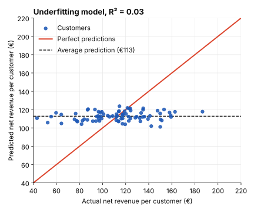
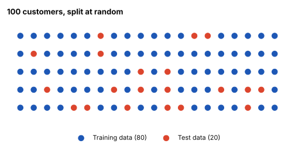
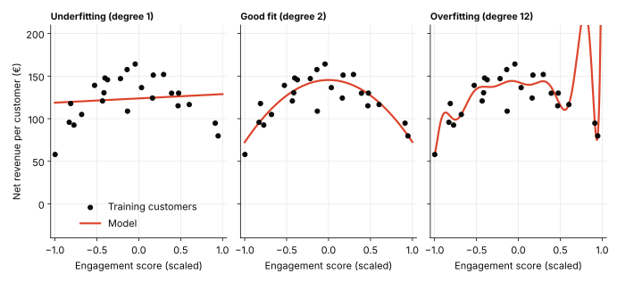
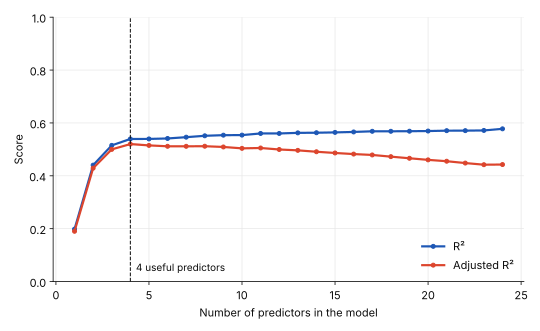
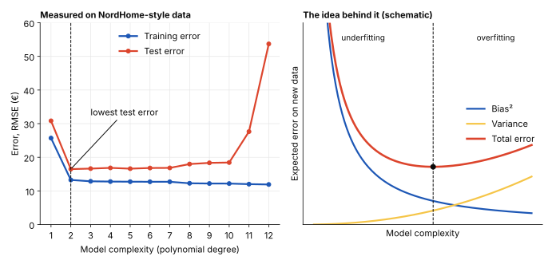

Regression analysis
Overfitting and Underfitting
Imagine you want to predict net revenue per customer. One model barely improves on a simple guess. Another fits its training data almost perfectly—but performs poorly on new customers. Both models are unreliable, but for opposite reasons.
In Evaluating and Interpreting a Regression Model, we looked at how well a model fits the data it was given. Now we take the next step: will it still work on customers it has never seen?
This is the problem of generalization. A model that is too simple may miss important patterns (underfitting). A model that learns the training data too closely may fail to generalize (overfitting). Throughout this post, we use customer revenue as an illustrative example. All data is illustrative.
Two Ways a Model Can Fail
Underfitting
An underfitting model is too simple to pick up the real pattern. It misses the signal even in the data it was built on, so its R² is low.
Suppose NordHome predicts net revenue per customer from the weekday of the customer’s first order. That variable says very little about how much a customer spends, so the model explains almost nothing. Its R² is 0.03, and it predicts roughly the same amount for every customer.

Typical causes of underfitting:
- Weak predictors. The variables have little real connection to the outcome. Order frequency, basket size or region would be far more useful.
- The wrong shape. The relationship is curved, but the model assumes a straight line.
- Too little data. The model does not have enough examples to learn the relationship.
Because the model has not learned the pattern even in the sample, it cannot work on new customers either.
Training Data and Test Data
To see whether a model works on new data, data scientists split the dataset at random before building it:
- Training data is used to build the model.
- Test data (also called holdout or validation data) is kept back and only used to check how the model performs on customers it has never seen.
Every record goes into exactly one of the two parts. In NordHome’s case, 80 of 100 customers train the model and 20 are held back.

Overfitting
Underfitting shows up as poor performance on the training data. Overfitting does not. An overfitting model performs very well on the training data and clearly worse on the test data.
Suppose NordHome gives a model 40 predictors for only 60 customers. The model starts treating quirks as rules. One customer who happened to order during a flash sale and spent a lot becomes part of the pattern. On new customers, those rules do not hold.
The reason is that every dataset contains two things: signal, the real relationship between predictors and outcome, and noise, random variation that is not part of that relationship. An overfitting model learns both. Its conclusions then apply only to the sample it was built on, not to the wider population.
To tell the three situations apart, compare the error on the training data with the error on the test data:
| Training error | Test error | Diagnosis |
|---|---|---|
| High | High | Underfitting |
| Low | Low, similar | Good fit |
| Very low | Much higher | Overfitting |
Chart 3 shows the same 24 customers fitted three ways: a straight line (degree 1), a smooth curve (degree 2) and a very flexible curve (degree 12).

Why More Predictors Inflate R²
R² never goes down when you add a predictor, even a useless one. If NordHome adds the number of letters in the customer’s name to its revenue model, R² still creeps up, because the model gets more room to bend toward the sample.
A higher R² can therefore be a false sign of progress. It can even be a warning sign of overfitting.
This is what adjusted R² is for. It charges a penalty for every added predictor and only rewards predictors that really help:
Adjusted R² = 1 − (1 − R²)(n − 1)n − k − 1n is the number of observations and k is the number of predictors. When you compare models with different numbers of predictors, choose the one with the higher adjusted R², not the higher R².

Bias and Variance
Data scientists describe the two failures with two words:
- High bias means the model is too simple and misses the pattern. This is underfitting.
- High variance means the model reacts too strongly to the sample it saw, so its predictions change a lot from one sample to another. This is overfitting.
An ideal model would have low bias and low variance. But as you reduce one, the other tends to rise. This is the bias-variance tradeoff, and it is why underfitting and overfitting can never be removed completely. The goal is to keep both as small as you can.

How to Reduce Each Problem
If the model underfits
- Add relevant predictors. For NordHome: order frequency, basket size, region.
- Collect more data. The model needs enough examples to learn from.
- Engineer better features. For example, turn order dates into “days since last order”, or add a squared term for a curved relationship.
If the model overfits
- Choose models by adjusted R², not by R².
- Always evaluate on a test set. Never judge a model only on the data it was built on.
- Use regularization. Ridge and Lasso penalize overly complex models.
- Simplify. Remove irrelevant or redundant predictors.
How to explain it to stakeholders
“We compared a simple and a very complex model for predicting revenue per customer. The complex one looked almost perfect on the customers it was built on, with an average error of about €12. On new customers its average error was about €54, more than four times as large.”
“The simple model was off by about €13 on the customers it was built on and about €17 on new ones. It is less impressive on paper, but it behaves the same way on data it has not seen. We recommend the simple one. Which customers do we need to be able to predict well?”
Key takeaway
Underfitting shows up in poor training performance, but overfitting only shows up when you compare training performance with test performance. R² always rises with more predictors, so use adjusted R² to compare models.
You cannot remove both problems completely because of the bias-variance tradeoff, but you can keep them small once you know how to spot them.
Related posts
- Evaluating and Interpreting a Regression Model How R², MAE and MSE measure fit, and how confidence intervals describe uncertainty.
- Simple Linear Regression The fitted line and what its slope and intercept mean.
- The Four Assumptions of Simple Linear Regression When a fitted line can be trusted.